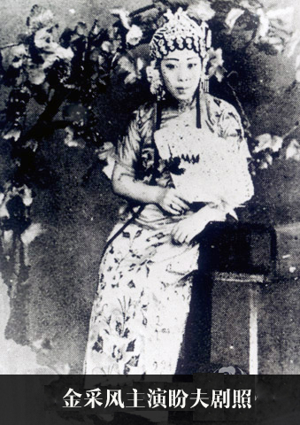

四工调
2019-05-16 19:55:45
1925年，施银花在琴师王春荣的帮助下创立。此调主要是是在男班“丝弦正调基础上，吸收京剧“西皮”和过门的某些因素，经过不断实践演出，改胡琴以“1—5”定弦为“6—3”定弦，而6、3在工尺谱中为“四”“工”，故名〔四工调〕。
唱腔特征
它使女演员的嗓音能充分发挥，从而使曲调更为清丽、委婉、悦耳动听，成为具有历史意义的创造。
与〔四工调〕相关的主要唱段有：
〔连板〕 由〔四工调〕“联弹调”衍化而来。四分音符约＝100～120，一板一眼旋律简朴，句式整齐，上下句起音和落音往往高低对应，有时把句头一拍连在前句尾部，句间只用小过门，上下若干唱句连在一起演唱，一气呵成，故名〔连板〕，如袁雪芬演唱的《香妃》“劝卿家，休动气”和《追鱼》中真假包公演唱“两位姑娘两条心”的问答式唱段。
〔倒板〕 把〔中板〕唱腔的上句打散演唱，散唱散伴，用于强调人物和唱段意境。如范娟演唱的《回十八》“祝家庄上访英台”。